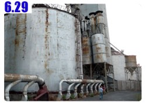

It rained for the whole night last night, but stopped when I got up at dawn.
Cars on the road made a sound of water splashing when swooshing by.
Even though the heavy rain had stopped, water puddles were everywhere.
Last night I slept in Nemat’s dorm room, a tiny place with two beds, one desk, and walls full of beauty posters from magazines.
In the early morning everybody was still asleep. The iron gate of the restaurant was locked, and so was Dido.
I managed to find a person sleeping in the storage room to unlock Dido.
Getting Dido back and changing clothes, I was asked if I would like to eat something or drink some tea.
Looking at my watch, it was still quite early. Everybody was either still asleep or not at work yet.
In order not to trouble anyone, I decided to eat along the road later.

While doing my nightly routine before sleep, I found my toothbrush and toothpaste were gone.
I recollected that they were left on the sink vanity in the hotel room where I stayed the day before yesterday.
Without brushing teeth properly, it would be troublesome that my toothache would come back. I just recovered…
Flossing and gargling thoroughly, I would buy a new toothbrush and toothpaste when I next saw some shops.

Riding along the well-paved main road, it even had a shoulder as a bike lane for me to ride on.
I wanted to stay on this road.
Could it be possible that that main road would take me to Almaty and all the way up to Astana?
After a short ride, a few gas stations and a signboard with “hotel, 50 meters ahead” were in sight.
If I had not slept in the restaurant last night, it could have been quite a different night.

Having breakfast at the roadside restaurant around 9:00am, I still did not read the menu but asked the waiter to order for me.
The table setting was western style and always with a very large sugar jar.
The only thing I knew how to order was “tea”. Tea with sugar tasted good and helped me recover.

I got a set meal including stew potato, chicken, salad and rice stopped with white sauce – a good portion, and palatable.

It was funny that when the store staff found out that I did not speak Kazak, he asked if I spoke English.
I nodded happily and said yes. Did anybody here speak English?
The answer was “no”.
If so, why did you ask me if I spoke English?
The Kazak way of calculating bills is interesting as well. In China, the number was always rounded off.
For example, if a meal was 493 RMB, the bill would be 490 RMB.
In Kazakhstan, everything was rounded up, do there was no change back if 500 KZT was handed over for 493 KZT.
The roadside rest area was also not too shabby, it had places for eating and shopping.
After getting new toothbrush and toothpaste, I was off.

Continuing on the main road, when I saw a policeman standing by the road,
I pointed my hand forward and loudly asked “Asatana?”
He shook his head.
What happened was if I kept riding on this road, I would be heading south and entering Kyrgyzstan in two days.
I had to backtrack to get to Almaty.
Turning back upset me quite a bit. Fine then, I would continue on and turn to the north when I had a chance.
Seeing a person in a car wreck on the road side in the distance, I was quite nervous.
I had been seeing animals’ bodies along the way, but please don’t let me see a human body.
Thank god, that person was a healthy man who was dismantling the car and salvaging the auto parts.
Graffiti on the wall – I could only understand the ♥ and the text smiley :-). Was that love talk?

The map in Chinese was useless and I could not read the road sign in Kazak.
The only tool could navigate with was my compass.
It silently showed me that I was moving toward midway between west and southwest.
I was lost terribly, so the heaven sent me an angel.

A motorcyclist passed by. He stopped and asked me if I spoke English.
Yes, I did. He indeed spoke English not just asking for fun.
Yingo, from Scandinavia, had traveled for five weeks on his beloved heavy motorcycle and had done 10,000 km.
We both were heading for Moscow but on different routes.
I felt embarrassed to tell him that I was lost.
Yingo checked on his map and told me that I was not terribly lost,
continuing on another 20 km, I could turn right toward the north, riding another 100 km to get back to the right road.
Taking a picture of the map for future reference, I saw a place named Kepa, and expected it to be today’s lodging.

The attractive structures with castle-like pointed towers are actually tombs.
They look more luxurious than the houses where the alive people live.
Before turning right to adjust my direction, I bought one liter of apple juice.
I had no idea if there would be towns to get supplies along the way.
Usually I was as sparing of water as possible.
Once a shop or a gas station appeared, I would buy one liter of beverage and quaffed it real quick.

I stopped for a drink and to catch my breath before leaving the well-paved main road and continued on the minor road
Once I hit the minor road, the road became lousy and was full of potholes. What happened? Did a meteor strike the road?


Not an easy ride, but the scenery along the road was beautiful.
Golden grass was on both sides of the road. I had no idea they were pastures or weeds,
they were beautiful and waving in the wind like a golden sea.


Getting on a side road, it was less than 30 km away from Kepa.
Halfway, I was stopped by three cops with gold crowned teeth in their mouths in a sedan.
Policemen did not drive police cars. No wonder I did not see any police cars running along the road.
I thought they stopped me to cheer me up or something. It turned out that they wanted to check on my passport.

While they were browsing my passport, I asked for Kepa information.
I made a gesture of sleeping - any hotel in Kepa? Everybody shook their heads.
Then, a gesture for eating – any restaurant in Kepa? They still shook their heads.
REALLY? What a miserable place.
Then, a gesture for drinking – it could not be possible that Kepa had no shops? Finally everybody nodded.

Passing a small lake along the road, I would say it was not a lake but a pond of flood water.
The water was not clear so I had no desire to soak my feet. After taking a picture, I was off.
Dido was propped against a short tree with stiff branches.
I hit my head on the branches a few times and had to bend over to walk Dido out.
Everything gave way to the flat landscape stretching as far one could see.
Kepa was in sight and looked nice in the distance.
There were many small houses and some storage-like structures. I thought to myself, “shouldn’t it be not too backward?”

When arriving in Kepa, I could not happily tell Dido that we had arrived.
The reason was this town had deteriorated so badly.
The noisy birds in the sky were all crows. This town is located at the intersection of a road and a railroad.
How could it fall apart to such an unacceptable degree?
When I got up to the bridge crossing over the railroad, a shepherd boy cried out loud,
running over and talking to me in the language I did not understand at all – it sounded exotic, didn’t it?

It was not romantic whatsoever, his body language made me understand what he was saying.
He made a gesture of smoking – do you have cigarettes?
Getting into Kepa, empty streets and falling apart houses, most of which were abandoned.
There were a huge power facility and an abandoned factory house.
It seemed that this place was once prosperous with industry. How did it become today’s decaying town?

Finally spotting a person, I made a gesture of drinking, asking where I could find a shop?
He led me all the way to the decaying town and then opened up the factory’s iron gate.
Inside, all were large broken rusted machines. He gave me a PET bottle with water in it.
That was not what I was looking for, a shop, but I appreciated the water.
Filling up my water bottles, and drinking some water, I spoke in Kazak with poor pronunciation “where is there a shop?”

He pointed somewhere in the town and offered to take me over.
I walked Dido following him, but he gestured me to leave Dido and I could sleep here tonight as well.
He was the first person I met in the little town. I just wanted to ask for information about a shop.
It turned out that he took me home and let me stay for one night. Fate was indeed something marvelous.

The person who took me in for tonight was named Guyweidian. He watched the abandoned factory.


I bought one liter of orange juice, two liters of cola, a few bags of instant noodles
and a big bag of bread at the only shop in town. After rounding up, I paid 580 KZT.

Since I saw Guyweidian boiling water, I thought of buying a few bags of instant noodles.
Noodles accompanied by bread and cola sounded a nice meal.
Back in Guyweidian’s dorm, only he and his dog were left in this enormous factory large enough to employ more than 1,000 people.


While water was boiling on the stove, I offered the instant noodles,
but Guyweidian seemed to have another idea for dinner.
Before dinner, he took me to a place with a big water tube where cold water ran.
He said the water was not drinkable but I could take a sponge bath – excellent!
I fetched my towel and clothes first, cleaned up myself, and did my laundry.
The clothes were not washed in soapy water, but it was better than not washing at all.

The washed clothes were hung up to dry at the abandoned deck where nothing had left.
The dinner was white, short and thin noodles seasoned with black pepper and salt topped with sliced onion
– looked normal but amazingly delicious.
The sheep-poop-like pellets in my hot tea were in fact processed tea. I added a few teaspoons of sugar.
The abandoned factory did not have power and water. There were tens of PET bottles in various sizes containing water.
I had no idea the source of the water though.
Without power, the pictures were quickly uploaded and stored in my computer.
Hopefully I would find a place to recharge my camera, cell phone and other stuff needing power.
I had given up upon Internet already. As long as I could get online once in Kazakhstanduring the month of travel, I would be content.

After dinner, Guyweidian gave me a tour of the abandoned factory.
I did not understand what he said, but my guess was this place was a cement factory.

Tens of tall and huge silos lined side by side. The structure in the center seemed to be the control tower.
Nothing left in the tower except pigeon poop, feathers, and dead bodies.

As the rusted front door was opened, the birds were frightened and flew away – they were totally startled.
How long would a factory take to decay to a condition like such? 3 years, 5 years?
After entering the dirty factory house, we climbed up the steep stairs.
If you fell down the stairs, you stepped on nothing but bird poop.
The rail I needed to hold onto was also covered with bird poop. It was dangerous not to hold onto the rail.

Because the factory went down, Kepa was affected and went down with it,
even though Kepa had the intersection of the railroad and the main road.
Today, there was no traffic on the road, and no train ever stopped.
I could image how relatively prosperous the town had been, but it had been long forgotten now.

I could not think of a reason why people were still staying here, perhaps they could not let go.
The crows squawking and spiraling in the sky the whole day sounded sad and dead.

The abandoned factory had its own railroad, now it was overgrown with weeds.
The rusted railway tracks lay on the ground like a skeleton rotten with time.
Guyweidian watched the abandoned factory by himself.
Even he was alone, some kids or ex-coworkers would come to chat with him at times. He was not too lonely after all.
He was a 35 year old married man. His wife and two kids lived in a major city.
He did not have much to do except locking up every door and witnessing the buildings decaying day after day.
At 9:00pm, I laid my sleeping bag on the bed and was ready to sleep.
He was outside busy hammering nails till late night
Kepa was like today’s sunset – sentimental and lonely with the smell of death – beautiful but brief. Glory does not last long.